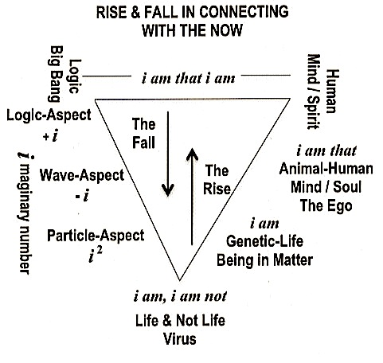

1-The Human Path of i
The Human Path of i (2005)
In this Post, the power of the NOW operator will be introduce, with the remaining nine to twelve Postings continue with the development in the activation, knowing, sensing and correcting these operators. Two topics will be introduced here. They are (1) The Human Path of the NOW Operator i (slight modification of my 2005 writings), (2) The Power of NOW, and (3) How one stay within this Now Matrix, or return at will. This posting continues the previous Posting, On Positive Living—How To. I have to also say that up to now the entire Website, of 163 Postings and Pages, is a preparation for formulating the next series of 14 Postings.
Lets begin with the most interesting NOW operator Holon. This is the Holon i am that i am, Imaginary Number + i , Imaginary Number – i. These NOW Holons are show below.
THE NOW OPERATOR
{kind=link}
{kind=link}
The left side, i.e, the Fail, needs no explanation on this imaginary number i. It is used in Quantum Mechanics as one of the NOW Operator. However, I shall return latter to clarify the relationship between God and the Logic Big Bang with respect to the Fall from i am that i am to the state i am, i am not.
Thus, we shall now begin a discussion on the meaning of this letter i as it relates to human ascension, i.e., The Rise side of the diagram. This is the i embedded in the Biblical phrase i am that i am, or in the phrases as i am, and i am that. These phrases tell us the Beings of i, or the individual within the different stages of Mind-Spirit, Mind-Soul development. The phrase i am symbolizes an ordinary human Being, in the stage of growing up, from birth up to age 30. This is the stage of body-brain development. This is the stage of preparation, experiencing, questioning, and learning how to be a human Being. For most of you this is the phase of training to become, an 8-5 scientist, an 8-5 bookkeeper, or an 8-5 practitioner, or a worker in whatever field of endeavor.
For most of you, your learning during this stage of i am, defines who you will be for the rest of your life: a scientist, a bookkeeper, an engineer, a doctor, a service worker, and so on. Thus, for most of you, you will be called that engineer, that doctor, that service worker, and so on. In short you will also say of yourself, i am that, in the community of humans. For most of you, you are content, if not happy to be “that“, all your life. “That” now becomes one’s profession. These are the citizens of planet Earth. Yet, there are others who never complete this stage of growing up, of becoming “that” Earth citizen.
These are the misfits who are overcome by temptation. The purpose of their living is simply to exist. I have just described the majority (perhaps 85%) of Earth’s citizens, who grow up to be “that“, and are satisfied being “that“, whatever profession he or she settles into.
This word “that” for most of you becomes your soul, your attached Ego. You are proud to be an Engineer. You are proud to be a Doctor. You spend years and a lot of hard works to become an Engineer or a Doctor. When your Ego takes control of your psyche, then your spirit-mind or soul-mind will be taken over by your attached Ego. Your spiritual path will be over. When one attached the word “that’ to the Ego, you will return to the state of “I am.” Your meaning of life is to exist only, to become one of the 85% of Earth’s citizens.
However, there are those professionals, a very small minority, that are not, nay, cannot, be satisfied or happy with their lives or their profession, and not because of money, status, or interests. In fact, these people don’t know why they are not happy. Some of them drive two or three Mercedes, and manage multi-billion dollar international corporations. Some of them become status symbols, the icons, the movie stars of society. Yet they are not happy with who they are, or what they represent. In short, these people cannot use their profession to classify themselves, as i am that, for they don’t know, what “that” is. This small segment of society is searching for their place in the Cosmos. Each of them is searching for how to become “that” Cosmic citizen. So he or she can ultimately classify himself or herself as, i am that, i am. Each of them is searching for the real meaning of life. Why was he or she born? What is his or her destiny? In short, each one of them is searching for his or her life-path. It was the search for his own life-path that drove me, Wing Pon, into constructing this Matter-Being Paradigm. In the process of constructing this Paradigm, I begin to experience my own body-soul-spirit evolution-involution. Starting with the stage of i am, I progressed to the learned stage of i am that; and then another stage of i am that, and finally, to the ultimate stage of finding “that” in i am that i am. This final state in finding “that” corresponds to finding my connection with God, or with God’s Vacuum Computer as I learned in this Participatory Universe. With this brief introduction to Wing Pon’s own progression of the Rise side of the above diagram, let us return and clarify the Fall on the left side of the above diagram.
I shall next discuss this left side of the diagram, namely the Fall. God Created the Logic for His Initial Beings from the First Cause, the Involution Logic for all His Creation inside the Logic Vacuum, or the Spirit Universe. These Initial Beings are the elementary particles and their Involution Logic to Evolve and Ascension as a Human Being. Each elementary particle exists in a non-local world of logic in its own Godlike state. This Godlike state is defined as: i am that i am. That is to say, these elementary particles are in God’s presence, the non-local universe, and hence they are in a state of i am that i am. They exist in a base nine world of numbers. That is, their actions obey the qualitative rules of God’s base-nine Involution Arithmetic. They also exist in a base ten world of numbers with the quantitative rules of operation co-creating between God’s First Cause and the Universe’s evolutionary process. The ability to transition between these two worlds is in the inherent nature of each of these elementary particles. This inherited nature is embedded in the i, the mathematical symbol of {-1}1/2, within each of them in their complete state, defined as i am that i am. This i is its own self-operator of switching between i representing the logic of itself and i representing the logic in this non-local world, which was also Created by God’s First Cause. This explains why the body of an elementary particle is a point in space-time; and this point is a singularity another NOW Operator. In turn, this implies that an elementary particle exists only in its original God state of i am that i am without the need to pass through the developmental states of i am, and i am that. This i is referred to by the mathematicians as an imaginary number. Relying on the mathematical property of this i, the quantum physicists developed physics by experimentally observing the behavior of these elementary particles. However, what these physicists did not realize was that what they have described was not the Being in which the elementary particle exists, but their states of Becoming “that”, which depends on the observer and the conditions of the observation, that is the Frame of Reference. In other words, what the quantum physicists described was the state of i am that, where “that” is a function of the Observer—Observed—Reference Frame between them. This explains the probabilistic nature of the quantum world described by these quantum physicists.
Going down the path of the Fall, the next Being we come to is the material objects, the rocks, the mountains, and so on. Notice that the initial Being of an elementary particle is a living Being, i.e., their inherited their NOW Operator in singularity state. These elementary particles are in a state referred to as Being in Matter. This next Being, the material object, is a non-living Being: This was a fall from a living to a non-living Being. At this stage of the Fall, the memory of God is completely gone. Their individual existence is its own state of i am, as i am a rock, i am a mountain, and so on. Now we precede to the third state of Being, namely, the virus. This is a transitional state of Being, between non-living and living. This transitional state will be fully described during your trip. This is, as shown in the diagram, a Being in transition between, i am a living Being, and i am not a living Being.
Returning to God’s presence for us human Beings means using the power of the “i“, as a transition or teleportation operator, or a NOW Operator, in the statement of i am that i am. This i will transform, in human Beings, through the act of intention. It is through intention that each human enters into this non-local world of God, or into God’s self-programmable computer. It is through the act of intention that we come to know God. It is through the act of intention that each of us can identify with the statement, i am that i am, the name of God and actually to be in the presence of God. Therefore, it is through the act of one’s own intention and one’s own identification with one’s spiritual knowingness that one finds the identity of “that” with God in the statement of i am that i am.
I can now explain to you that the act of intention is defined by a Holon with three activating components. These three components are brain activities, soul/spirit actions, and dimensional shifts inside the moment of Now, which is consciousness. The activities of the brain correspond to our mental activities. Soul actions have to do with space-time perceptions of the wave-energy component of matter. In other words, we must “feel” and “see” those aspects of reality pertaining to our intentions that our brain activities have identified. Finally, Spirit actions correspond to the knowingness of the logic-information component of matter. The three components of the Holon for identifying and actualizing “that” in the statement i am that i am are intellect-intuition-inspiration. In these components, inspiration corresponds to whole brain awareness, while intellect has to do with left-brain reasoning. The visual activity of intuition brings in the right-brain archetype/gestalt understanding. In addition, the activating Holon together with the identifying Holon represents the observation Holon.
Individual variations within each of these observation Holons generate the non-uniqueness in the information-energy interchanges of quantum waves or fields of interactions, such as the vortex theory, the spiral geometry, superstring theory, twistor theory, torsion field, etc. Each of these observed interchanges represents the state of “that” in the statement of i am that, where “that” represents a vortex, a spiral field, a string, a twistor, or a torsion field depending on the constraints of the observation Holon. We are referring specifically to each individual observer’s unique perspective of observation. The non-uniqueness of the wave function is the reason for confusion in the observer’s attempt at understanding his or her observations. What is important is not the decoding of logic into information, or the transition of this information into energy, or the conversion of energy into the mass of a three-dimensional object. What is important is for the spirit to be able to enter into a state of absolute knowingness, inside the logic world, of knowing the encoded logic in question, for it is the logic component of matter that is unique and is the unchanging component in the co-creation technology. And the accuracy of this knowing state depends on the particular stages achieved by the observer’s soul evolution and spirit involution.
Lets conclude this section with a summary of the Now Operator in i, as shown below.
{kind=link}
The Power of NOW will be discussed in the next Posting. The following series of 16 and other 12 unpublished Postings are planned for discussions.
3-Completing TOE in Physics (1)
4-Completing TOE in Physics (2)
5 COMPLETING TOE IN PHYSICS (3)
Collapse of NOW onto Biophoton-Free Will-Faraday Cage
Monopole–Zero Point–Dipole on Health
ZERO-POINT HEALTH-ILLNESSES FORMULA
LIVING INSIDE THE NOW
{kind=link}
Notice, the term Health does not goes into sicknesses. It deals with the prevention of illnesses and emphasis on knowing-executing God’s Computer so [Spirit-Mind]—[Soul-Mind]—Being-in-Matter] can interacting and mutually supports each other as a Holon: with
Spirit-Mind —-> “Reading—Knowing–modifying” the Logic-Information of a particular set of codes inside the Vacuum Computer;
Soul-Mind —-> Visions in the form of Information-Energy of Computer Executing this particular set of codes inside the Information Vacuum;
Being in Matter —-> Outputs the results of this particular Execution in Physical Space. Outputs of Scientific Experiments are the beginning; but no understanding of the How and the Why since the believe of mind-matter interactions does not exist
As stated the above emphasis is in Reading—Executing—Outputs a set of code in the control of the Brain-Mind of the Observer, and a further capability or changing the set of code at will. This capability is not yet available at the present; however presented in these Posting are preliminary of a sum total of 60 years of life-works in the investigation of its possibility with the hopes that others will continue. Completing this work would definitely stabilize today’s and future’s civilizations. This is the belief of the present Observer. Perfecting what is proposed in these Postings will definitely leads to personal and mass ascensions, and an Enlightened Civilization.
The present brain-mind state of a few self-developed or more “evolved” individuals:
Soul-Mind (right-brain) —-> Psy-Vision and Near Death Experiences in the Form of Light
Spirit-Mind (left-brain) —-> Dowser and in Radionics (yes / no responds); Uncontrolled
ESP and PK; in unknowing-uncontrollable scientific experiments with instruments to produce the outputs;
No Soul-Mind and Spirit-Mind coordination with any individual Observer, as of yet.
Being in Matter —-> No knowledge of
Exceptions are Radioinics in the turn of the 20 th Century —-> The works of W.Guyon Richards (in The Chain of Life on the 172-Element Table and Abrams, Rift, Tesla, C.W. Leadbeater and a few others).
The 172-Element Table, which forms the Holon 27-Istopes—172-Table—Acu-Point Circuit, is used in the Author’s development.
Even with these individuals, they can only activate their individual soul-mind within the Reference Frame of the late 19 century.
Thus, the Matter-Being Paradigm is the first attempt to address these issues and belief. In fact, this Matter-Being Paradigm was unconsciously developed using the author’s limited maturity in his spirit-mind development. However, the Author has no capability with using his soul-mind. The writing of this Website was the spirit-mind of the Author within his Reference Frame.
Obviously, the initial stage of this Paradigm definitely needs modification—correction—expansion by others before it can be used and experimented on. This is the job for others, with the hope that what is presented in this Website is complete enough for this task.
ECKHART TOLLE AND OTHER “NEW AGE” THINKERS
Compare this analysis on the Power of Now and how to live within it to Eckhart Tolle’s proposal in his book, The Power of Now, to the Positive Thinking of the so-called New Age, and to the meditation of the various schools of ancient Monks.
For reference, the following quotes are on Echkart Tolle: From Wikipedia
The Power of Now: A Guide to Spiritual Enlightenment is a book by Eckhart Tolle. Published in the late 1990s with an initial printing of 3,000 copies the book’s sales’ growth accelerated in 2000 after Oprah Winfrey recommended it in her magazine, O. It has appeared on the New York Times Best Seller list and been translated into 33 languages. As of 2009, three million copies had been sold in North America.
The book talking about itself
Tolle wrote in The Power of Now that he hoped it would “play its part in … the transformation of human consciousness,” by acting as a catalyst to those who are ready for a radical inner transformation or what Tolle calls “enlightenment”. He says the book “represents the essence of my work, as far as it can be conveyed in words”, and that it “can be seen as a restatement for our time of that one timeless spiritual teaching, the essence of all religions”. Tolle says he is trying to “draw you into this new consciousness as you read … to give you a taste of enlightenment” and to this purpose, he warns readers not to get hung up over the words he uses. The book is cast in a question and answer format, and originated in Tolle’s work with individuals and small groups over a ten-year period. Most of the questions arose while he was teaching and counseling
In Questions sections about Ecljart Tolle: http://www.spiritualcritiques.com/author-criticisms/eckhart-tolle/ Joseph Waligore (There are 135 comments, 2 included here. This site also has critics on Deepak Chopra, Ken Wilber, Neale Donald Walsch, and others)
Can meditative methods developed for and by monks and mystics be applied to people in the modern world who have family and other social responsibilities? And will it help solve our civilization’s problems? These are the two important wonderings I have about Tolle’s spiritual teachings. …
The first question I wonder about is whether his emphasis on oneness with the divine and being in the moment will totally take care of the problems normal people encounter in modern life. Being totally one with the divine obviously works for monks, especially Indian monks whose emphasis is on transcending the world and getting enlightened. But modern people with responsibilities have entirely different concerns like taking care of their children and making sure they keep their jobs. …
Comments, Cynthia
I agree with you: I don’t think we should stay there all of the time. It is also interesting as someone noted, that often spiritual people are not psychologically balanced. However, going or living beyond the personality does not mean that one’s neurosis or mental healthissues should be ignored either. It’s true that spiritual practice can be an effective adjunct to healing a personality but I don’t think it should exclude mental health intervention, either.
I have often wondered why these “spiritual progressives” leave so much unanswered in their books and lectures, etc. Their are some horrific abuses and tragedys that happen to people these days and I’m not sure one can meditate their way back to health without including the important psychological work that needs to be done.
Comments, Margarent Dobrowoiska
Being in NOW, as I understand, and believe it was Tolle’s intention, means to focus on what you are doing NOW and accepting this particular reality of the present moment. Being in Now does not eliminate understanding the future repercussions on our actions at the present, making plans for the future, or to tap wisdom from the past. Actually I found your interpretation quite silly, but you have made a good point, that New Age does not address natural urges of humans (sexual or other instincts).
I will not comment on these comments since I did not study them enough, also since my belief is already stated.